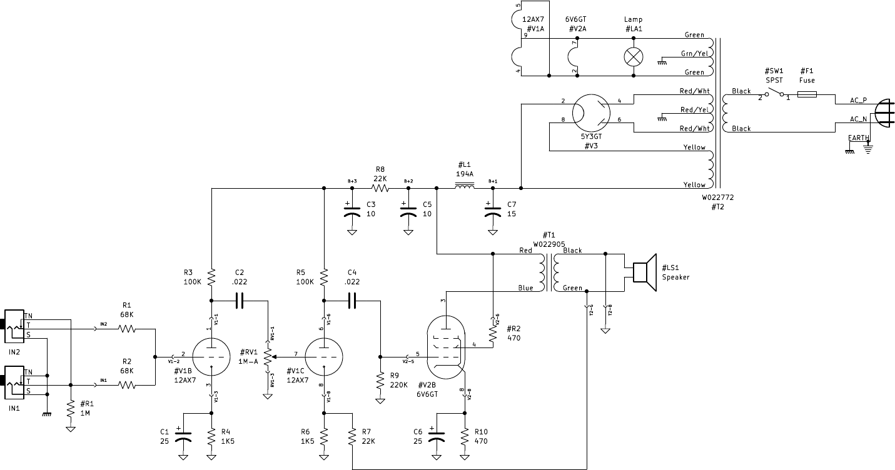
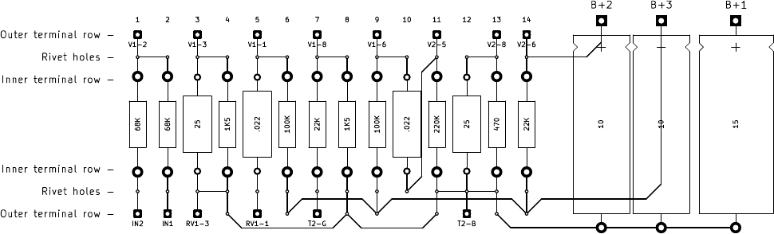
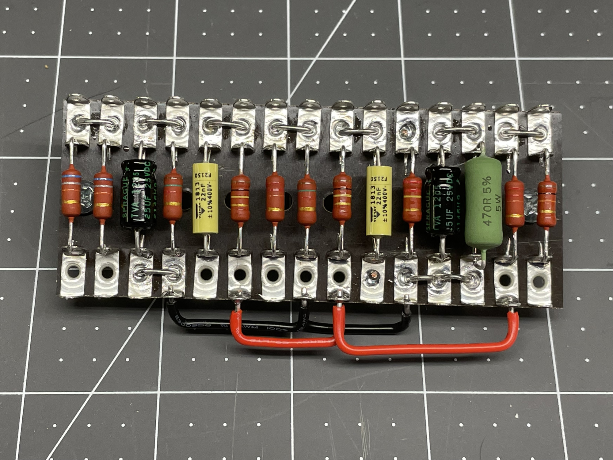
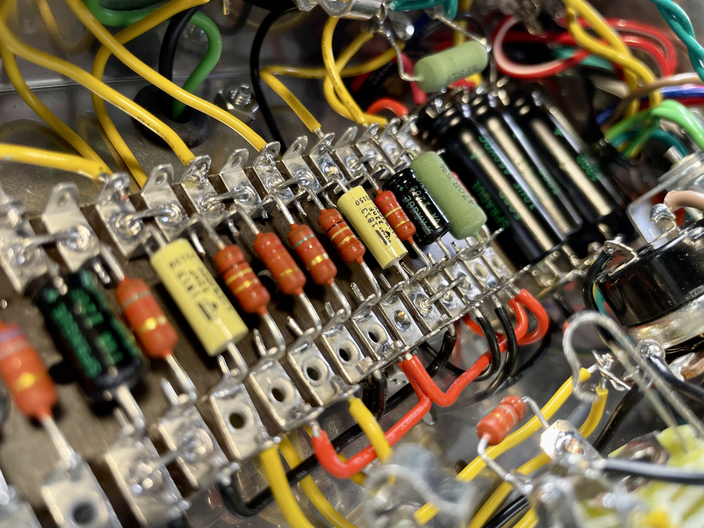
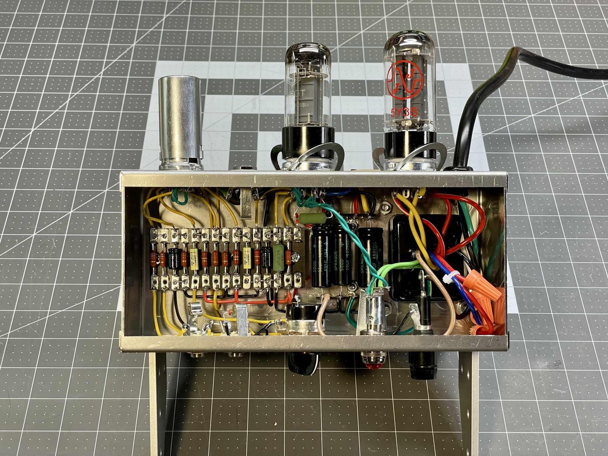
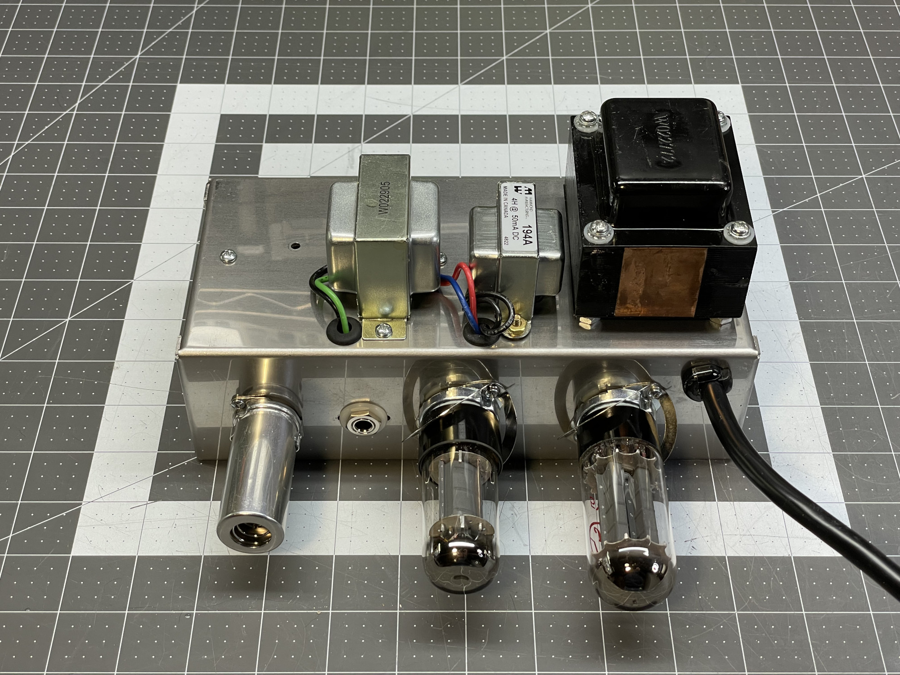

The Chomp is my Fender Champ Amp clone, designed and built in January 2023. The circuit is a 5E1, which was produced by Fender in 1955 and 1956. My design was drawn using KiCad and all of the source files can be found at my Github page.
The 5E1 differs slightly from the much more common 5F1 circuit in that the first stage of the power supply includes a 4H choke instead of a 10KΩ resistor. I use a W022772 power transformer which provides both a 330-0-330 secondary and a 300-0-300 secondary. The 330V secondary is appropriate for a 5F1, but the 300V should be used for a 5E1, as the voltage drop of the 10KΩ resistor is no longer present. (Fender's 5E1 used a 250-0-250 power transformer.) A JJ 5Y3S on the 300V secondary puts 340V on the plate of the 6V6.
I've also diverged in my selection of filter capacitors, using 10μF/10μF/15μF rather than the 5E1's 8μF/8μF/8μF or the 5F1's 8μF/8μF/16μF. Large capacitors with vintage-correct values are expensive and unnecessary.
Here's a PDF of the schematic suitable for printing.
This layout is designed for a U-style turret strip, such as a P-HTBU-2X18, which is easily trimmed to size. In the photos below, you can see that I used the inner terminals to mount passive components, the outer terminals to make off-board connections, and the rivet holes to tie adjacent columns. The large electrolytic capacitors don't fit that board, so I've mounted them using stand-alone turret strips. Note, there is one lead on the back of the main terminal strip, connecting the bottom of column 10 with the top of column 11.
Here's a PDF of the layout suitable for printing.
Here are some photos of my build. Click to enlarge. All off-board wiring is 18 gauge solid copper. Signal wires are yellew, grounds are black, DC supply is red, and filament AC is green. This chassis is mounted in a 5F1 cabinet from Teb Weber. It looks and sounds great.
   (Note the 10KΩ resistor in the right-most colums disappears. This layout easily supports both 5E1 and 5F1.)